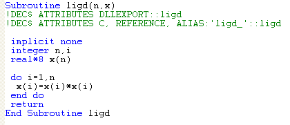
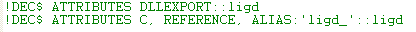
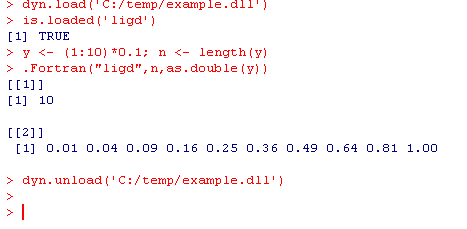
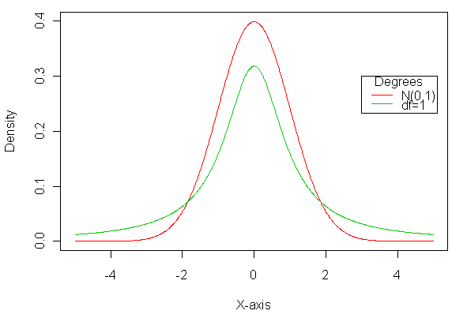

¡¡
**********************************************************************************************************************
|  | Subroutine ligd(n,x) !DEC$ ATTRIBUTES DLLEXPORT::ligd !DEC$ ATTRIBUTES C, REFERENCE, ALIAS:'ligd_'::ligd implicit none integer n,i real*8 x(n) do i=1,n x(i)=x(i)*x(i) end do return End Subroutine ligd |
The following two lines in the above example are compulsory:


Some other related webpages: using external compiler with R at UWO, Canada (D. Murdoch's webpage), calling C & Fortran from R at UMN, USA (C. Geyer's webpage), calling Fortran function from R at Acadia University, Canada, how to Fortran 95 code in R at Gunnar's blog, Denmark
**********************************************************************************************************************
Example 1:
| Programs: | X <- c(1:1000)*0.01-5; Density <- dnorm(X); T1 <-
dt(X,1); plot(x=X,y=Density,type='l',xlab="X-axis",ylab="Density",xlim=c(-5,5),ylim=c(0,0.4),col='2'); lines(x=X,y=T1,col='3'); legend(3,0.3,c("N(0,1)","df=1"),col=c(2,3),lty=c(1,1),title="Degrees") |
| Output: |
 |
**********************************************************************************************************************
Example 1: This example is used to draw a scatterplot-like picture to check the latest exchange rates of several important currencies.
Example 2: This example is used to draw a plot for a stock with closing price and volume.
**********************************************************************************************************************
¡¡